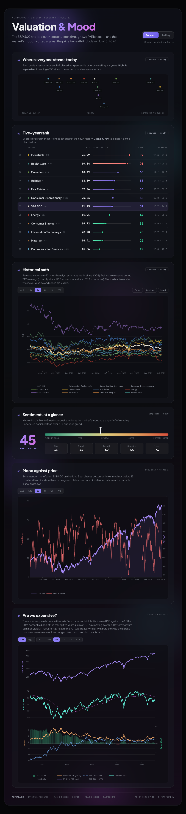
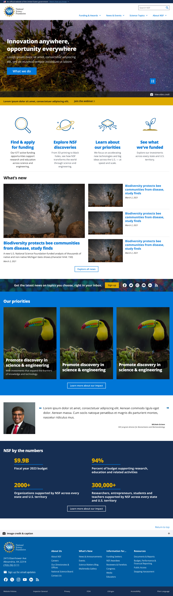
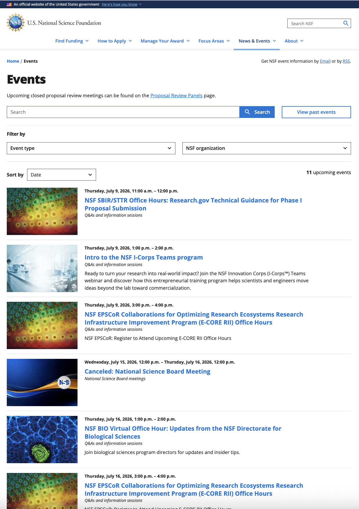
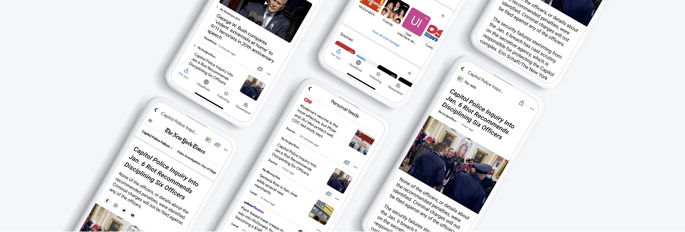
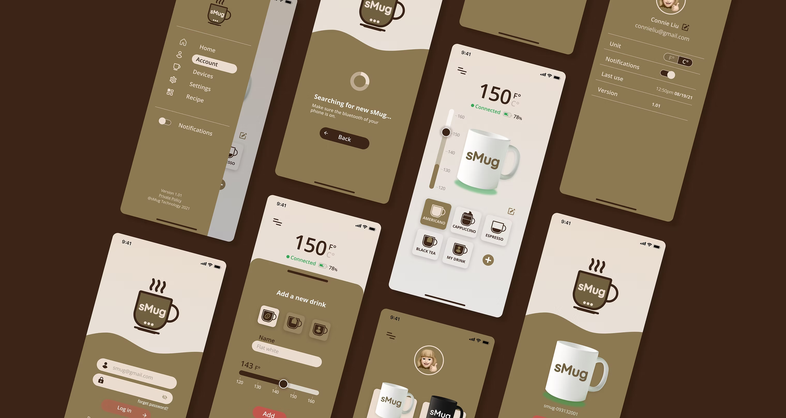
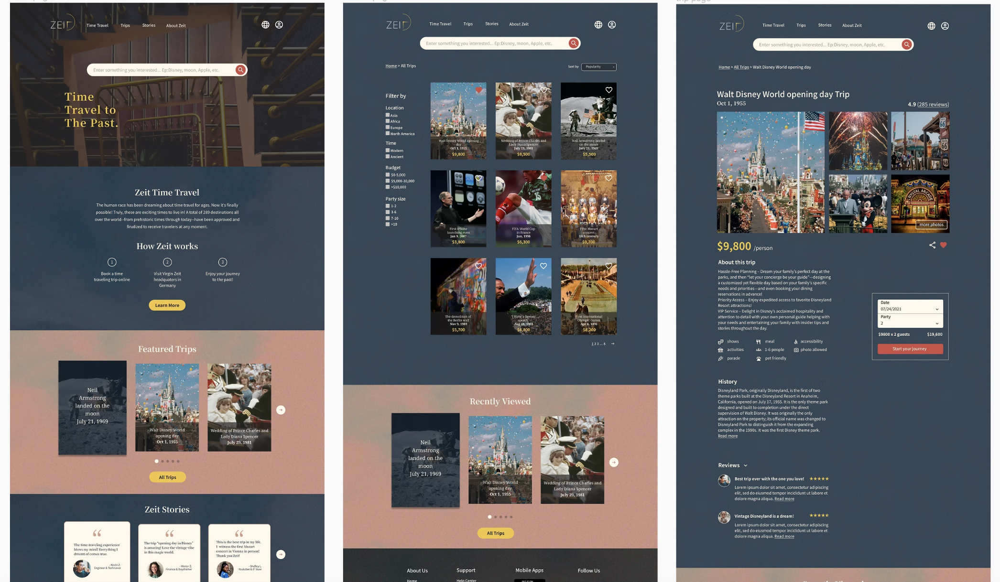

ROLE
Product Designer, 8+ yrs
A Product Designer shaping large-scale
platforms with a deep practice in design systems,
AI-powered experiences, and complex workflows.
Orchestrated a multi-agent AI system that translates dense food labels into verifiable, evidence-based health insights in seconds.

Designed an AI-powered research assistant that automates complex funding workflows, aligning institutional needs with precision data.

Modernized a massive legacy government ecosystem into an intuitive, highly structured search experience for millions of researchers.

01
A collection of digital products and strategic redesigns. From modernizing legacy government ecosystems to structuring complex financial data, these case studies showcase versatile problem-solving and systemic design thinking.

Market Valuation & Sentiment HubDATA VIZ · FINTECH
NSF HomepageHOMEPAGE • DESIGN SYSTEM
NSF News & EventsGOV · CONTENT Yihu Global PlatformE-COMMERCE
Yihu Global PlatformE-COMMERCE
 Staff Directory RedesignENTERPRISE
Staff Directory RedesignENTERPRISE

Google NewsCONSUMER
sMugIOT · MOBILE
ZeitE-COMMERCE